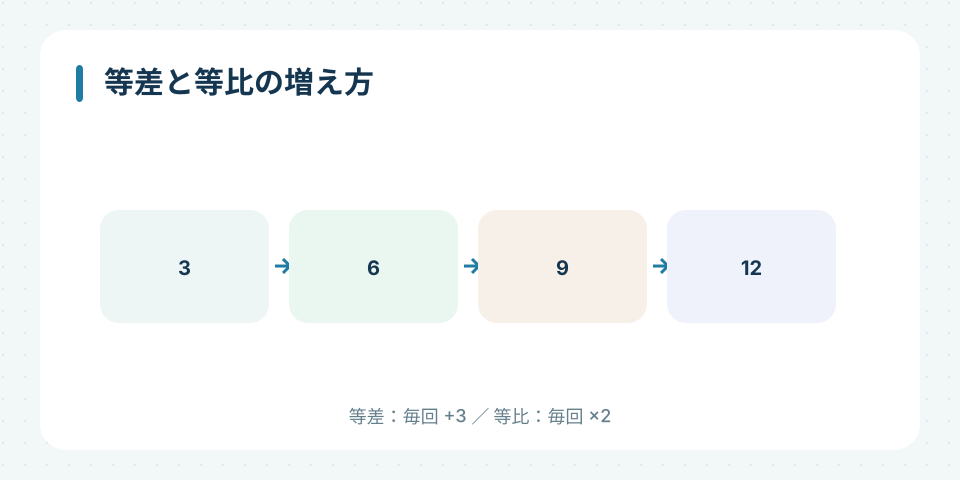

数学 / UNIVERSITY ENTRANCE EXAM
等差数列と等比数列の公式｜一般項・和
数列は「差が一定」か「比が一定」かを最初に見分けると整理できます。一般項と和を混同しないよう、実際に数を並べながら理解しましょう。
∑
このページで学べること
第n項と初項からn項までの和を解く。要点を読んだら、最後の確認問題で理解度をチェックしましょう。
POINT 01
等差数列は差を足す

初項 a、公差 d の等差数列の一般項は aₙ = a+(n−1)d です。初項3、公差4なら 3,7,11,15,… なので、第10項は3+9×4=39。
Sₙ = n(a₁+aₙ)/2 = n{2a+(n−1)d}/2
前からと後ろからを組にすると、各組の和が一定になることが公式の理由です。
POINT 02
等比数列は比をかける
初項 a、公比 r の等比数列では aₙ = arⁿ⁻¹。2,6,18,54,… の第5項は2×3⁴=162です。
r ≠ 1 のとき Sₙ = a(1−rⁿ)/(1−r)
r=1 なら、すべての項がaなので Sₙ=na です。分母に1−rがある公式をそのまま使わないよう注意してください。
POINT 03
問題文から使う公式を決める
- 隣接する項の「差」または「比」を確認。
- 求めるのが第n項なのか和なのかを確認。
- nを代入する前に初項と公差・公比を整理。
例｜等差数列の和
1,4,7,…,28 の和は？ 項数は 1+3(n−1)=28 から n=10。10(1+28)/2=145。
PRACTICE
確認問題に挑戦！
全3問。答えを考えてから「解答と解説を見る」を押してね。
Q01
5,8,11,… の第20項は？
解答と解説を見る ＋
正解・解答例
62
5+(20−1)×3=62。
Q02
3,6,12,… の第6項は？
解答と解説を見る ＋
正解・解答例
96
初項3、公比2だから3×2⁵=96。
Q03
1+2+4+8+16 の和は？
解答と解説を見る ＋
正解・解答例
31
初項1、公比2、5項の等比数列で、2⁵−1=31。
今日のまとめ
等差＝差が一定、等比＝比が一定。第n項と和の公式を使い分ける。
ここまで読めたら、ひと区切り。
理解できたら学習済みにチェックして、次の記事へ。
記事について
StudyMasterの無料学習コンテンツです。AIを補助的に用いて作成しています。例題・解答は公開前にご自身でも確認してください。内容に誤りがある場合は、学校の教科書などと照合してください。
公開・更新：2026年11月12日